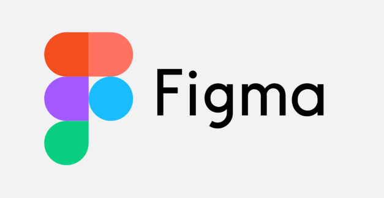
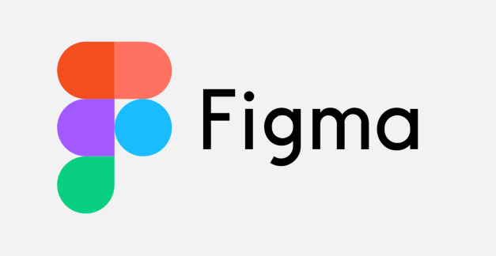

Давайте познакомимся
Обо мне
С 18-ти лет работал в ресторанной сфере — начинал барменом, потом учил других в школе бартендеров, управлял заведениями и открывал свой бар. Этот опыт научил меня трудолюбию, пониманию сложных процессов и работе с людьми. Со временем понял, что расти дальше в этой сфере некуда, и решил кардинально изменить свою жизнь, связав её с айти. Полгода назад увлёкся фронтендом — нравится видеть, как с помощью кода оживают сайты и продукты, как визализируются задумки дизайнеров и продактов. Активно учусь этому ремеслу и ежедневно впитываю новые знания и технологии.
Мечтаю попасть в отличную команду, чтобы приносить пользу и дальше развиваться во фронтенде.
Что умею
Могу верстать сайты, пока простые, но с каждым проектом все более комплексные.
Владею HTML и CSS, пользуюсь GIT и GULP, понимаю и использую методологию БЭМ, верстаю адаптивно.
Изучил и применяю css-анимации, учусь JQueru.


 
